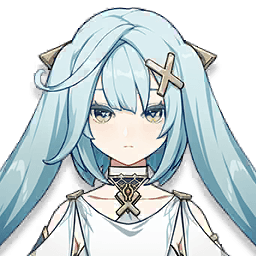
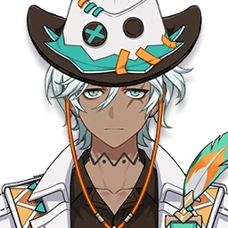

Персонажи / Прюн
Лучшие отряды: Прюн
4★ · Анемо · Катализатор · отрядов в базе: 11 · лучший DPS 179 186
Открыть в GI-Rec
Лучшие отряды
1 Mitya C0 Скитающаяся звезда R1 Heart of the Furnace ×4 Прюн C6 Око клятвы R5 Изумрудная тень ×4 Одетта C0 Драконий рык R1 Застывшее в тени разочарование ×4 ГГ (Крио) C6 Клинок озарения R5 Застывшее в тени разочарование ×4 179 186DPS KQMS 2 Сандроне C0 "Магический супермеч высшего владыки" R5 Застывшее в тени разочарование ×4 Mitya C0 Скитающаяся звезда R1 Стойкость Миллелита ×4 Прюн C6 Эпос о драконоборцах R5 Изумрудная тень ×4 Одетта C0 Клинок озарения R3 Heart of the Furnace ×4 164 441DPS KQMS 3 Варка C0 Меч драконьей кости R1 День восходящих ветров ×4 Прюн C6 Око клятвы R5 Изумрудная тень ×4 Николь C0 Эпос о драконоборцах R5 Дар небес ×4 Дурин C0 Волчий клык R1 День восходящих ветров ×4 137 932DPS KQMS Симуляция 4 Рэйзор C6 Меч драконьей кости R1 Ночь открытия неба ×4 Коломбина C0 Жертвенный нефрит R1 Серенада шёлковой луны ×4 Прюн C6 Кольцо Хакусин R5 Изумрудная тень ×4 Инеффа C0 Баллада фьордов R1 Рассветная песнь звезды и луны ×4 107 107DPS KQMS Симуляция 5 Нёвиллет C0 Жертвенный нефрит R1 Охотник Сумеречного двора ×5 Фурина C0 Волчий клык R1 Золотая труппа ×5 Фишль C6 Поникшая артемизия R1 Дар небес ×5 Прюн C6 Прототип: Янтарь R5 Изумрудная тень ×4 101 448DPS KQMS Симуляция 6 Нёвиллет C0 Жертвенный нефрит R1 Охотник Сумеречного двора ×5 Фурина C0 Волчий клык R1 Золотая труппа ×5 Прюн C6 Прототип: Янтарь R5 Изумрудная тень ×4 Дурин C0 Рассвет прядильщицы луны R2 Дар небес ×4 100 193DPS KQMS Симуляция 7 Нёвиллет C0 Жертвенный нефрит R1 Охотник Сумеречного двора ×5 Коломбина C0 Жертвенный нефрит R1 Серенада шёлковой луны ×4 Прюн C6 Кодекс Фавония R3 Изумрудная тень ×4 Фишль C6 Разбивающий цепи R5 Дар небес ×4 98 104DPS KQMS Симуляция 8 Нёвиллет C0 Жертвенный нефрит R1 Охотник Сумеречного двора ×5 Фурина C0 Волчий клык R1 Золотая труппа ×5 Шилонен C0 Меч Фавония R3 Свиток героя сожжённого города ×4 Прюн C6 Око клятвы R5 Изумрудная тень ×4 97 981DPS KQMS Симуляция 9 Сахароза C6 Кодекс Фавония R5 Изумрудная тень ×4 Прюн C6 Око клятвы R5 Церемония древней знати ×4 Николь C0 Сверкание чистых вод R1 Дар небес ×4 Дурин C0 Волчий клык R1 День восходящих ветров ×4 90 032DPS KQMS Симуляция 10 Райдэн C0 Смертельный бой R1 Эмблема рассечённой судьбы ×4 Фишль C6 Бесструнный R5 Дар небес ×4 Прюн C6 Кольцо Хакусин R5 Изумрудная тень ×4 Нахида C0 Скитающаяся звезда R1 Стойкость Миллелита ×4 83 785DPS KQMS Симуляция 11 
Фарузан C6 Боевой лук Фавония R5 Стойкость Миллелита ×4 
Ифа C6 Песнь странника R5 Обсидиановый фолиант ×4 Дурин C0 Драконий рык R5 Дар небес ×4 Прюн C6 Око клятвы R5 Церемония древней знати ×4 68 882DPS KQMS Симуляция
Вид по умолчанию: 5★ персонажи на C0, 4★ на C6, без гача 5★ оружия. Другие созвездия и оружие — в приложении.
Чаще всего в отряде с
Другие персонажи: Анемо

 Дуринотрядов: 4
Дуринотрядов: 4 Нёвиллетотрядов: 4
Нёвиллетотрядов: 4 Фуринаотрядов: 3
Фуринаотрядов: 3 Фишльотрядов: 3
Фишльотрядов: 3 Mityaотрядов: 2
Mityaотрядов: 2 Одеттаотрядов: 2
Одеттаотрядов: 2 Никольотрядов: 2
Никольотрядов: 2 Коломбинаотрядов: 2
Коломбинаотрядов: 2 ГГ (Крио)отрядов: 1
ГГ (Крио)отрядов: 1 Сандронеотрядов: 1
Сандронеотрядов: 1